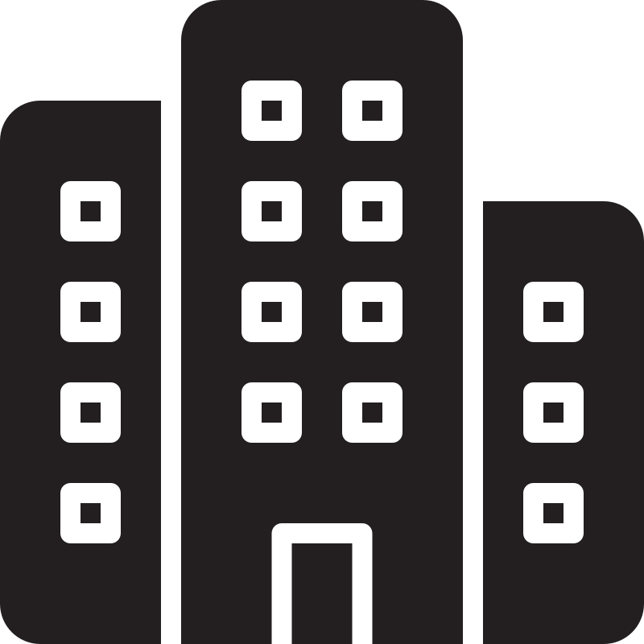
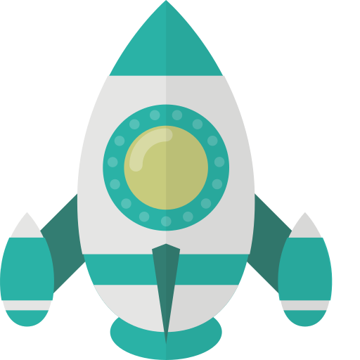

胡淳榜
 15158615892
15158615892
 email@zming.info
email@zming.info


 个人信息
个人信息
男，1996 年出生
求职意向：后端研发工程师
工作经验：超5年
 工作经历
工作经历
北京下厨房科技有限公司，后端开发工程师，2018.9~2023.6
国内最受欢迎的美食菜谱应用，千万用户，百万日活
 主要项目经历
主要项目经历
UGC审核系统
Keyword: Python、Celery、rabbitmq、ElasticSearch、TIDB、Flink、Scala、Grafana、InfluxDB、Docker、上亿数据随着下厨房用户内容增长量的爆发，五花八门的恶意内容不断出现，内容审核也变得越来越重要
在这个背景下，我主要负责了内容审核系统项目的重建与设计，并进行后续迭代。
我制定了审核流程，拆分审核规则，极大简化了增加分类器的工作，缩短后续迭代周期，并且维护了用户体验，使得整个审核逻辑对用户无感知，引入用户行为感知，使得恶意用户发布内容成本更高，并提供了完整的监控流程。项目上线后，恶意内容用户投诉率也由4%降到0.1%
通知服务
Keyword: Kotlin、Mysql、Grpc、Celery、Spring、gradle、Sharding-JDBC、Docker、cmake、上亿数据、分库在下厨房之前的通知服务中，偶发出现数据库慢查询的问题，导致通知发送的延迟和不可靠性。为了提高通知服务的性能和可靠性，我负责对通知服务进行重构、设计与优化，提供一个高稳定的系统。
我重新定义了接口，旨在更好地满足业务需求并简化通知结构, 通过打平通知结构，我消除了复杂的关联关系，减少迭代成本，使得我们能够更快地适应业务需求的变化。
将原有单库架构改成分库结构，降低数据库负载，提高项目可用性，引入Sharding-JDBC实现了分库的透明操作和高性能查询，大大提升了用户体验，避免了通知发送的延迟。
合同服务
Keyword: Python、Flask、Celery、Mysql、Docker、成本优化在面对入驻讲师数量增加所带来的合同签订和管理工作占据财务部门大部分时间的挑战时，我主导了一个优化项目，旨在解决这个问题。
首先，我与财务部门和讲师深入沟通，全面了解合同签订的各个流程和相关需求。通过仔细分析现有流程中的痛点和瓶颈，我确定了优化的方向和目标。
接着，我与前端团队紧密配合，实施了线上合同服务。我们基于讲师合同的要求和财务部门的需求，设计和开发了一个在线合同签署系统。这个系统简化了合同签署流程，使得讲师可以通过电子签名快速签署合同。同时，财务部门可以方便地跟踪和管理合同状态。
通过引入线上合同服务，我们成功将合同签署周期从几周缩短到几天。这大大提高了合同签署的效率，并减少了管理成本。讲师和财务部门的工作流程得到了极大简化，他们可以更专注于核心业务，提高工作效率和满意度。
搜索服务
Keyword: Go、grpc、Statsd、Grafana、InfluxDB、Docker、ElasticSearch、Redis、Flink、Scalc、pyspark为了满足用户的搜索需求，我们构建了一套基于
go实现的搜索系统，其中我负责维护厨studio业务模块期间切割了算法匹配和业务逻辑，业务需求不再关心关键词语义匹配准确率，减轻了上手难度
IM服务
Keyword: Python、Docker、Falsk、基于shard分表分库、Mysql、S3、CDN、Redis
抽象了消息接口，使得消息和接口解耦，并基于shard理念将用户的消息数据扩散到各个表和数据库中以减少索引、数据库压力，其 中图片使用对象存储，并提供cdn加速访问，保证消息系统的可靠和稳定。
技术贡献
引入H265编码，对于热点视频进行编码替换，减少1/5的带宽成本
参与静态语法解析工具的搭建，基于ast进行代码层级检查
封装了http client, 统一控制异常管理、超时请求
优化ac机算法，引入双列表实现，有效提高了查询效率，并降低了内存使用
对负责的服务语言版本的更新，确保始终使用最新技术
北京海文互知网络技术有限公司，Python开发工程师，2017.5~2018.7
安全、可靠、快速的企业云盘
主要项目经历
SeafES
Keyword: Python、Redis、ElasticSearch、cmake、分布式索引Seafile-Docker
Keyword: Docker、Vagrant、bashSeafEvent
Keyword: Python、libevent、sqlalchemy、ldap
 教育经历
教育经历
金华职业技术学院
计算机网络技术2014-2017杭州电子科技大学，
网络工程2015-2020全国物联网竞赛三等奖
2015
 技能清单
技能清单
Python、Go为主力语言、了解Kotlin、C#、Rust、Shell
精通数据库优化与设计
熟悉服务器高并发模型，多线程、多进程、协程、多路io复用
熟悉Flask、Django、Spring、Tornado、Gin等框架
熟悉Mysql、TiDB、ElasticSearch、influxDB数据库，了解postgresql以及clickhourse
熟悉Redis、RabbitMQ、Kafka消息队列服务
熟悉Docker、Docker-Swarn, Ansible, 了解K8s
熟悉服务器部署以及日常维护
熟悉TCP/IP、HTTP、OAUTH、DNS等常见协议
熟悉缓存技术，负载均衡、流量控制、熔断技术
熟悉ELK等监控体系的搭建
熟悉对象存储和CDN
了解Flink、Hive、Hadoop等大数据组件
了解ai工具的使用
了解大数据分析，熟练使用pyspark、jupyter
了解Javascript、Backbone、Bootstrap